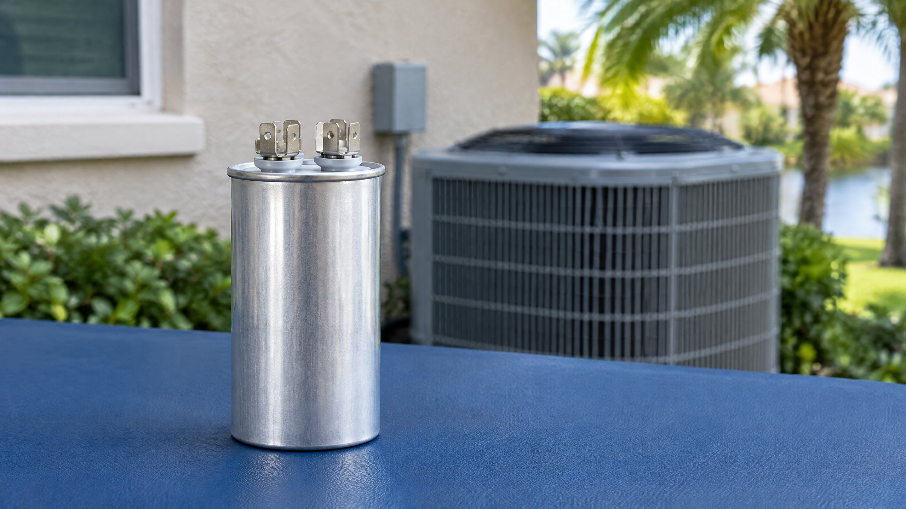

Why an Intact Case Does Not Prove a Capacitor Works
Yes, an AC capacitor can have an ordinary-looking exterior while its electrical performance is outside the requirement. Appearance and capacitance answer different questions. A photograph shows the case; an appropriate electrical test evaluates a property the motor circuit depends on.
Fluke explains that deterioration can change capacitance and that capacitors can develop open or short circuits. Trane identifies bulging, cracks and leaking liquid as visible failure signs. Together, those distinctions explain why a professional may find a problem without showing you a dramatically swollen part. The absence of those signs is not a measurement. [1] [3]
The reverse matters too: an undamaged-looking capacitor is not automatically bad because the AC struggles. A service recommendation should connect the tested component to the equipment requirements and the complaint. In Tampa and North Tampa, a warm house makes prompt assessment important, but its location does not create a different electrical pass/fail rule.
What Is the Technician Actually Measuring?
Capacitance describes a capacitor's ability to store electrical charge. Motor run-capacitor values are commonly expressed in microfarads, shown as µF or MFD. The useful question is not simply whether a number appeared on a meter. It is whether the measured value meets the applicable component and equipment specification.
HVAC School advises technicians to compare tested run-capacitor values with the rating and tolerance, and to verify that the installed capacitor is actually the correct one for the motor or compressor. A previous replacement is not proof of correct selection. [2] Ask for the required value, measured value and reason the result supports replacement. Do not use one universal tolerance or an internet example for every system.
A meter message also needs interpretation. Fluke notes that an over-limit indication can reflect a value beyond the meter's range or a faulty capacitor. The display alone does not settle which explanation applies. The instrument, method and component context matter. [1]
Why Can Two Test Methods Give Different Information?
A technician may use a capacitance measurement on an appropriately isolated component or evaluate a run capacitor during equipment operation. These are professional procedures, not homeowner instructions. HVAC School describes both approaches and explains the value of checking operation under load. It also emphasizes accurate tools, correct interpretation and checking readings after replacement. [2]
You do not need to request energized testing to get a defensible diagnosis. Ask which method was appropriate for this equipment and what the result established. If the system cannot run, a method that depends on operation may not answer the question at that moment. An isolated test can still provide useful information.
A passing capacitor test does not certify the entire AC. A failing test does not rule out a second problem. Voltage, motor condition, connections and controls belong to the broader assessment; replacing one part should be followed by checking the equipment response.
What Evidence Should a Replacement Recommendation Include?
For a proposed AC capacitor replacement, request a plain-language explanation rather than a photo alone. The following questions help you understand the finding without taking over the testing.
| Question to ask | What the answer should clarify |
|---|---|
| What specification applies? | The capacitor requirement for the actual motor or compressor, not just the old part's appearance. |
| What was measured? | The tested value or failure finding, relevant tolerance and method used. |
| Does that explain the complaint? | How the result fits the starting or running problem and whether another condition needs attention. |
| What will be verified afterward? | Correct replacement selection and the equipment's response, not only that a new part was fitted. |
If a label is unreadable or equipment has been modified, ask how the technician established the requirement. Guessing a rating from physical size is not the same as identifying the correct specification. Our AC repair quote questions explain the separate written-scope and authorization discussion.
Why a Hum or Stopped Fan Is Not a Capacitor Test
Trane notes that capacitor-related symptoms overlap with other equipment problems. A failure to start, poor heating or cooling, or a burning smell can have more than one cause. [3] A sound cannot tell you the measured capacitance, and a working indoor blower does not prove every outdoor component is operating.
If your actual complaint is an outdoor fan that hums but does not spin, use that symptom-specific guidance rather than treating this component explanation as a diagnosis. A capacitor and a contactor are different parts; similar symptoms do not make them interchangeable.
For a changed cooling complaint, a complete AC repair assessment should determine the cause before selecting the part. ENERGY STAR's contractor maintenance checklist includes electrical connections, motor voltage and current, and the equipment's starting, operating and shutdown sequence. Those are broader checks, not a capacitor-only conclusion. [4]
What Can You Report Without Opening the Cabinet?
Leave the cabinet closed. Note when cooling changed, the thermostat mode and target, whether airflow continues indoors, and any sound already noticeable from your normal location. Tell the technician whether the symptom occurs at startup or after operation and whether a recent repair preceded it. These observations describe a pattern; they do not establish which component failed.
If you notice a burning smell from the equipment, turn the system off at its normal control and request service. Do not approach equipment to seek a smell, repeatedly restart it, push a fan blade or attempt a capacitor discharge. Trane reserves capacitor testing, discharging and replacement for trained HVAC professionals. [3] Fluke warns that a capacitor may remain energized after power is removed. [1]
For North Tampa homeowners, the practical next step is to report the behavior and ask for documented testing. You should not have to buy a part or perform an electrical experiment to explain that your cooling has changed.
Frequently Asked Questions
Can a bad AC capacitor look completely normal?
Yes. The absence of bulging, cracks or leakage does not establish its electrical condition. An appropriate professional test must be interpreted against the actual requirement; an intact case alone does not prove the capacitor passes.
Does a capacitance reading prove my entire AC is working?
No. A capacitor result addresses that component under the test conditions. The technician still needs to relate it to the complaint and check the relevant power, motor, connection and control conditions.
Should I insist that the capacitor be tested while the AC runs?
No. The technician should select an appropriate method for the equipment and its condition. Operating measurements and isolated capacitance tests provide different context; ask what was measured and how the finding supports the recommendation.
Can I check the capacitor after switching the AC off?
Do not handle or test it yourself. Capacitors can retain electrical charge after power is removed. Leave the enclosure closed and have a trained HVAC professional perform testing, discharge and any replacement.
Sources
- Fluke — Measuring capacitance and interpreting capacitor faults
- HVAC School — Professional run-capacitor test methods and specification checks
- Trane — AC and Heat Pump capacitor inspection and service boundaries
- ENERGY STAR — Contractor electrical and operating checks
Editorial Source Review & Publisher
On The Way Heating & Air. This homeowner explanation draws on the sources above. It is not a diagnostic result for your equipment or a capacitor-testing procedure. Appropriate measurements, the actual equipment specifications and operating verification should determine a repair recommendation.